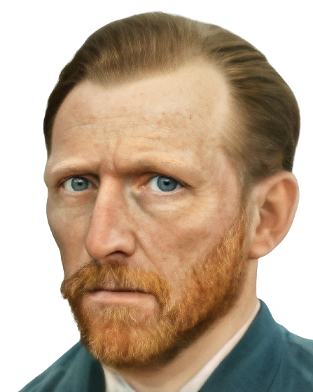
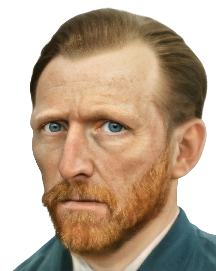

Vincent Van Gogh
Artists
Artists
Vincent van Gogh was a Dutch painter, generally considered to be the greatest after Rembrandt van Rijn, and one of the greatest of the Post-Impressionists. He sold only one artwork during his life, but in the century after his death he became perhaps the most recognized painter of all time.
Vincent Van Gogh was born on 30 March 1853 in Zundert in the southern Netherlands, the son of a pastor. In 1869, he took his first job, working in the Hague branch of an international art dealing firm. He began to write to his younger brother Theo, a correspondence which continued for the rest of Van Gogh's life. Van Gogh's job took him to London and Paris, but he was not interested in the work and was dismissed in 1876. He briefly became a teacher in England, and then, deeply interested in Christianity, a preacher in a mining community in southern Belgium. In 1880, at the age of 27, he decided to become an artist. He moved around, teaching himself to draw and paint and receiving financial support from Theo. In 1886, Van Gogh joined Theo in Paris, and met many artists including Degas, Toulouse-Lautrec, Pissarro and Gauguin, with whom he became friends. His style changed significantly under the influence of Impressionism, becoming lighter and brighter. He painted a large number of self-portraits in this period. In 1888, Van Gogh moved to Provence in southern France, where he painted his famous series 'Sunflowers'. He invited Gauguin to join him but they soon began to quarrel and one night, Van Gogh threatened Gauguin with a razor. Deeply remorseful he then cut off part of his own ear. This was the first serious sign of the mental health problems that were to afflict Van Gogh for the rest of his life. He spent time in psychiatric hospitals and swung between periods of inertia, depression and incredibly concentrated artistic activity, his work reflecting the intense colours and strong light of the countryside around him. On 27 July 1890, again suffering from depression, Van Gogh shot himself. He died two days later.
Vincent van Gogh painted Starry Night in 1889 during his stay at the asylum of Saint-Paul-de-Mausole near Saint-Rémy-de-Provence. Van Gogh lived well in the hospital; he was allowed more freedoms than any of the other patients. If attended, he could leave the hospital grounds; he was allowed to paint, read, and withdraw into his own room. He was even given a studio. While he suffered from the occasional relapse into paranoia and fits - officially he had been diagnosed with epileptic fits - it seemed his mental health was recovering. Unfortunately, he relapsed. He began to suffer hallucination and have thoughts of suicide as he plunged into depression. Accordingly, there was a tonal shift in his work. He returned to incorporating the darker colors from the beginning of his career and Starry Night is a wonderful example of that shift. Blue dominates the painting, blending hills into the sky. The little village lays at the base in the painting in browns, greys, and blues. Even though each building is clearly outlined in black, the yellow and white of the stars and the moon stand out against the sky, drawing the eyes to the sky. They are the big attention grabber of the painting.